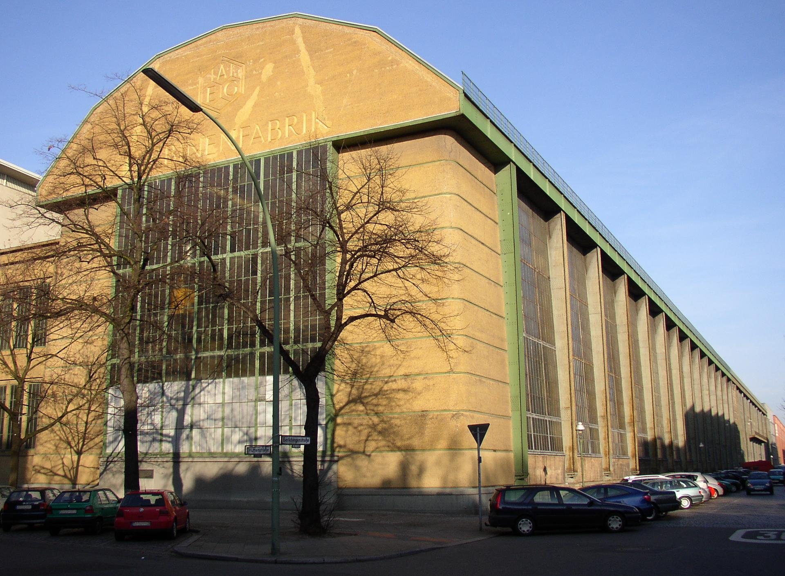
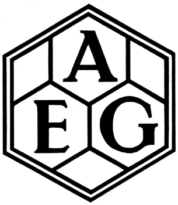

Early Modernism (1900–1914)
In the early 20th century, industrialization intensified across Europe. Designers increasingly embraced standardization, efficiency, and rational structure.
Peter Behrens

Peter Behrens, AEG Turbine Factory, 1909

Peter Behrens, AEG Logo Design, 1907
Behrens created one of the first unified corporate identity systems for AEG, designing architecture, products, typography, and branding within a coherent visual language.
Here, ornament is minimized. Structure, proportion, and geometry replace decorative flourish. Design shifts from expressive ornamentation toward functional clarity.